PRM393 · Lab 3: Cloud-Enabled Mobile App
Final report: Flutter and Firebase, ARTEMIS end-to-end tests, AI code review
| Student | Đoàn Thị Kim Thúy · SE190992 |
| Team | Phùng Thế Quân · SE193519 · Phan Đức Duy · SE193591 · Phan Hữu Phước · SE161951 |
| Repository | github.com/FU-PRM-Projects/Lab-03 |
| Lab 2 design | github.com/FU-PRM-Projects/prm393-lab2-group9 |
| Firebase project | prm393-not-lab3, Android app com.quanphungg.lab03 |
| Slides | slides/Lab03_SE190992_slides.pdf |
This report is the written record of the lab; the slides summarise it. Every claim that something works points to a figure in this report or to a file in the repository (paths are relative to the repository root). Work that is not finished is stated as such, with the reason.
Nốt ("note") is a daily journal for final-year students who feel burnt out. Their evenings tend to end with a list of what is still not done. Nốt asks a smaller question, "Hôm nay bạn làm được gì?" ("What did you get done today?"), and keeps every answer as a coloured note in a jar, so progress becomes visible. Around this core the app adds two habits that Lab 2 research pointed to: stopping a late-night scrolling session (self-control) and small social or physical challenges.
Lab 2 produced the research, persona, flows and a Figma design with a Flutter handoff (flutter-handoff.md). Lab 3 builds that design as a Flutter app on Firebase. The target is Android; a web build of the same code also runs on Firebase Hosting.
| Persona | Minh, 22, final-year IT student. Tired in the evening, opens short videos "for five minutes" and stays until after midnight; feels he achieved nothing even on productive days. |
|---|---|
| Success criterion | From tapping the evening notification, Minh logs a mood and one win in under 30 seconds. The app measures this itself: note_saved carries duration_ms (7 990 ms in the run in §6). |
| Data | All user data is real Firestore data under users/{uid}. The challenge catalogue (22 cards) is a read-only collection seeded from firebase/seed/challenges.json; there is no mock data in the app. |
The three main flows from Lab 2 are implemented end to end, each with its alternative and error paths:
| Flow | Screens | Alternative and error paths |
|---|---|---|
| F1 Evening note | S02 Today → S03a mood → S03b win → S03c extra text → S04 saved → S02; or the 21:30 reminder → S03a | Skip the extra text; mood "Rối" offers a one-minute first aid; leaving midway asks to keep the draft; offline saves on the device and shows a banner |
| F2 Self-control | S02 → S09 → S04; when it is hard to stop: "Stress?" → S10 90-second breathing → S04 | "Mình lỡ lướt quá đà" (I scrolled too much) is a recovery branch, not a failure; the habit list can be locked behind local_auth |
| F3 Challenges | S07 card deck → S08 detail → S04 → S07 | Switch to an easier card; postpone (nothing is lost); an outcome "Không như ý" (did not go well) still counts as having tried |
Besides F1–F3 the traceability file tracks eight supporting flows (P1–P8: first sign-in, email sign-up, exercise log, long journal, view/edit/delete a note, a bad week, notification deep link, settings) and three state flows (T1 empty jar, T2 offline or load error, T3 loading). Their status is in docs/design-traceability.md §2; two are partial (P4 keeps no draft when the app is killed; P7 and P8 depend on FCM, done in Stage 5). After Lab 2 the team added two things: photos on notes, groups and the profile, stored on Cloudinary (§5.4), and a streak of days that rewards writing a note every day (§2.1). The code base has 250 unit and widget tests, all passing, and flutter analyze reports no issues; CI runs both on every pull request (.github/workflows/).
docs/design-traceability.md is the matrix between the Lab 2 design and the code. Section 1 maps each of the 12 screens (plus their dialogs, sheets and states) to a route, a screen widget, a ViewModel and a data source. Section 2 maps flows to screens and tests, section 3 maps each Figma component on page "05 Components" to a widget, and section 4 maps each token to the theme. Section 5 is the list of deviations: 31 entries, D-01 to D-31, each with the Lab 2 design, what the app does, the reason and whether the Figma file has been updated.
The deviations fall into four groups:
| Group | Entries | Example and reason |
|---|---|---|
| Required by Lab 3 | D-01, D-06, D-07, D-10 | D-06: the weekly card is uploaded to Cloud Storage with progress and a link before the share sheet, because Lab 3 requires a generated file in the cloud. D-01: a "Firebase demo" group at the end of Settings, hidden by a Remote Config flag. |
| Platform and engineering | D-03, D-04, D-05, D-08, D-09, D-12, D-22 | D-08: offline save uses Firestore's offline cache and hasPendingWrites instead of a custom pendingSync flag: same behaviour, less code, no data loss. D-22: groups live under users/{uid} so one ownership rule covers all private data. |
| Contradictions in Lab 2 documents | D-02, D-11 | D-11: DESIGN.md allows 2 title lines, the handoff 3; a third line is cut at 360 dp, so titles stop at 2 lines. D-02 records limits the handoff set but Figma never showed (120 characters per win, 2 000 per journal, 5-second undo). |
| Usability and accessibility | D-13 to D-21, D-23 to D-30 | D-28: users read "Bỏ qua nhật ký" (skip journal) as creating a Journal note, so it became "Bỏ qua phần kể thêm" (skip the extra text). D-20: the tab bar background went from 14 % to 72 % white so icons keep 3:1 contrast over the colourful jar. D-21: "swipe to change card" also works as a button for screen-reader users. |
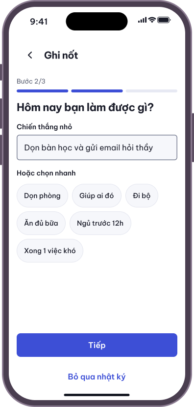
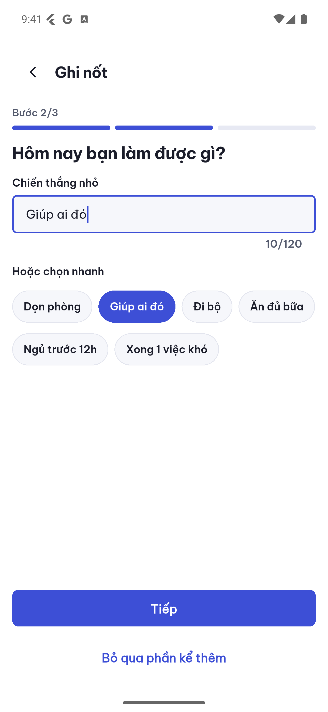
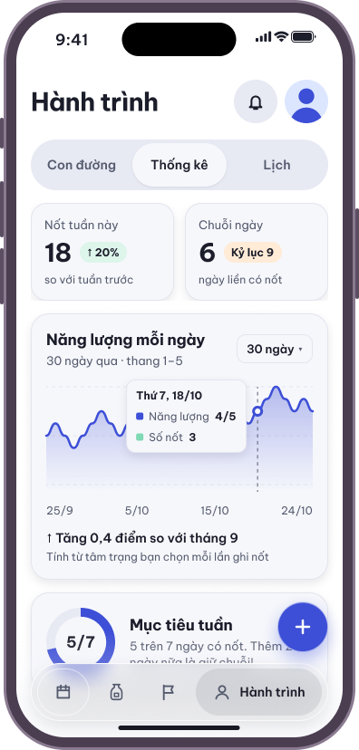
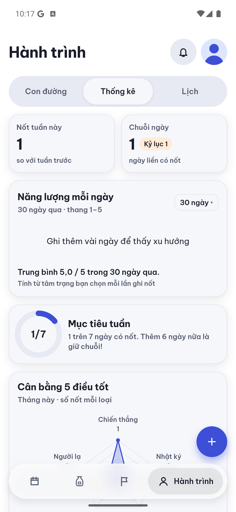
Lab 2 only showed a "streak" number inside the statistics screen, where the persona rarely looks. Because the streak is what brings Minh back each evening, it moved to the places he sees every day. Today (S02) has a streak card under the jar with the current streak, the record, the last seven days and the distance to the next milestone (3, 7, 14, 30, 60, 100, 365 days). When the first note of the day extends the streak, the saved screen (S04) celebrates, and the streak can be shared as an image through the Android share sheet. Nothing new is stored for the streak: it is computed from the notes by the same function as the statistics screen (JourneyStats.streak), so editing or deleting a note keeps it right. If today has no note yet, it counts up to yesterday, so the streak never breaks before the day is over (no penalty, as DESIGN.md asks). Only the shared image is kept, privately, in users/{uid}/sharedStreaks.
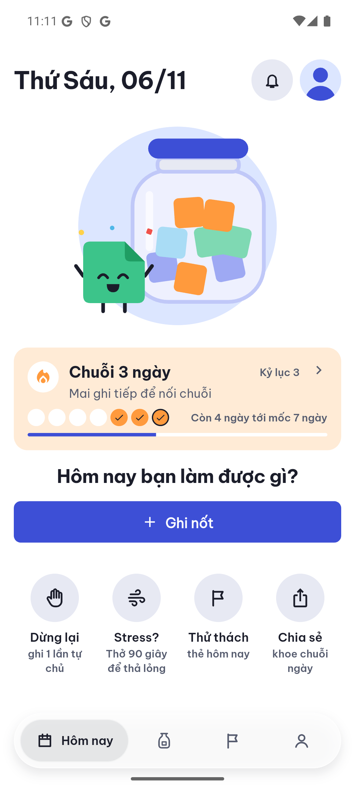
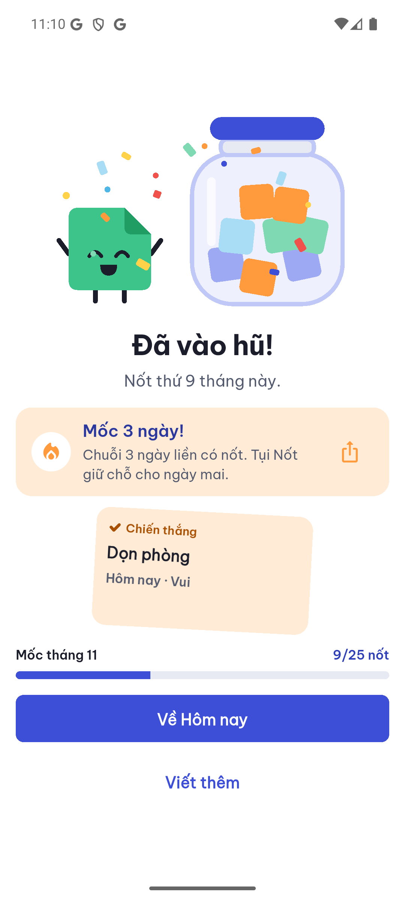
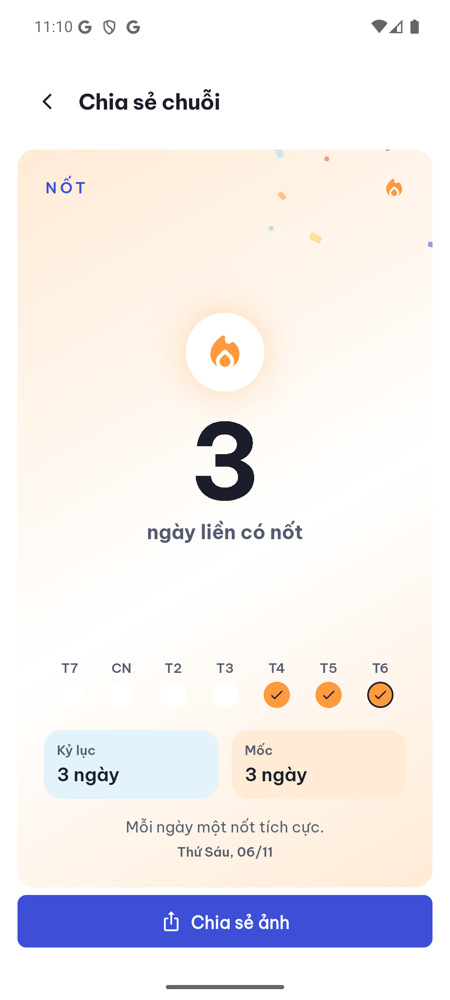
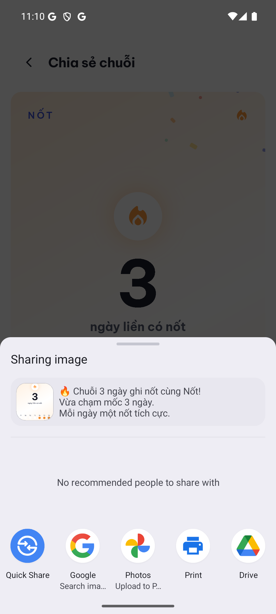
evidence/streak/Two things are not built: the AI free-tell on S03b (planned with Nốt AI) and group merging (D-23). Most deviations are still marked "Cần cập nhật" (Figma needs updating): the code and this matrix are up to date, the Figma file is not yet.
The app uses MVVM with Riverpod for state and dependency injection. Four rules from docs/architecture.md §1 keep the layers apart: a screen only watches a ViewModel and calls its methods; a ViewModel only depends on service interfaces; only lib/firebase/ imports an SDK (Firebase, but also shared_preferences); and models are plain Dart shared by all layers. A search for Firebase imports in lib/screens, lib/widgets and lib/viewmodels finds none.
| Layer | Folder | What lives there |
|---|---|---|
| View | lib/screens/, lib/widgets/ | One folder per screen; shared widgets for each Lab 2 component. Screens switch on the ViewModel state and never hold business logic. |
| ViewModel | lib/viewmodels/ | 17 ViewModels, each a Riverpod Notifier. Lists use a sealed ViewState<T>: Loading, Data, Empty, Error; forms have their own state (for example NoteComposerState with step, mood, title and saving flag). |
| Service | lib/services/ | Interfaces and their providers: AuthService, NoteRepository, ChallengeRepository, StorageService, AnalyticsService, CrashReporter, RemoteConfigService, MessagingService, Clock and others. |
| Implementation | lib/firebase/ | Firestore, Auth, Storage, FCM, Remote Config, Analytics and Crashlytics implementations, plus PrefsDraftStore. |
| Composition root | lib/main.dart | Initialises Firebase and overrides each service provider with its Firebase implementation; tests override the same providers with fakes. |
The path from tapping "Lưu vào hũ" (save to the jar) on S03c to seeing S04 is also the part of the 30-second criterion that the app controls:
save()users/{uid}/notes; waits ≤ 2 s for the servernote_saved; state = saved(id, pendingSync)If the server does not answer within two seconds the repository returns the note with pendingSync = true: the write is already in Firestore's offline cache and is sent when the network returns, so the screen never hangs offline. The note uses the device time instead of serverTimestamp, because a server timestamp is null until it syncs and an offline note would then be missing from date queries. If the write fails, the repository throws an AppException, the ViewModel returns to editing with a message, keeps the draft and records a Crashlytics non-fatal.
The layers in code, with red boxes on the relevant lines, are on slides 7–8 (slide/public/code/).
Services translate SDK exceptions into one AppException with a kind (network, permissionDenied, cancelled, notFound, unknown), so ViewModels never depend on Firebase types. ViewModels turn the kind into a short Vietnamese message in the Lab 2 tone, for example "Chưa tải được hũ. Kiểm tra Wi-Fi rồi thử lại." (could not load the jar, check Wi-Fi and retry). Loads longer than 10 seconds become an error state with a retry button. Because every dependency is injected, each ViewModel is tested with fakes from test/support/fakes.dart; for example test/viewmodels/group_detail_view_model_test.dart checks that opening a group logs group_viewed exactly once with the right parameters.
The Lab 2 tokens exist only in lib/theme/, and widgets read them from the theme:
| Lab 2 | Code |
|---|---|
| Colour variables | app_colors.dart: a Material 3 ColorScheme plus AppColors, a ThemeExtension for colours M3 has no role for (moods, note types, chart, success, warning) |
| Text styles | app_typography.dart: a TextTheme following handout table 1.2 in Be Vietnam Pro, plus AppTextStyles for four extra styles |
| Spacing, radius, elevation, sizes | app_tokens.dart: AppSpace, AppRadius, AppElevation, AppSize (for example the 48 dp minimum touch target) |
| Component themes | app_theme.dart: buttons 48 dp high, app bar 48, navigation bar 64, padded tap targets; AppTheme.light() builds one ThemeData |
| Components | 21 widgets in lib/widgets/, one per Figma component, with variants and states as parameters: AppButton has 5 variants and 4 states (docs/design-traceability.md §3) |
Screens use Theme.of(context).colorScheme, AppColors.of(context) and the AppSpace constants instead of literal values. A debug-only page, Settings → "Thư viện component (dev)", renders every widget in every state at /dev/components so it can be compared with the Figma page; it does not exist in release builds. The mascot Tụi Nốt has 8 faces, one per mood, so mood is shown by colour, face and text together and never by colour alone.
Accessibility. Touch targets are at least 48 dp through the theme, body text is at least 14 sp, and widget tests lay screens out at 360 and 412 dp. 41 files in lib/ set Semantics, including 17 of the 21 shared widgets: MoodOption is announced as one button with a selected state ("Tâm trạng Vui"), ShortcutButton reads its label and caption together, and OfflineBanner is a live region, so TalkBack announces it as soon as it appears. These labels also let test tools that read the accessibility tree find controls by name.
Seven Firebase services are used, plus Cloudinary for photos. Each one sits behind an interface, so the rest of the app is unaffected by how it is implemented or whether it is available. The table summarises what the user sees when each service fails; the subsections give the design.
| Service | Failure | What the user sees / what the app does |
|---|---|---|
| Authentication | Google chooser cancelled · wrong email password · other error | "Bạn đã huỷ đăng nhập." · "Email hoặc mật khẩu chưa đúng." under the field · "Không đăng nhập được. Thử lại." |
| Firestore | Offline write · load error · load over 10 s · permission denied | Saved on the device + offline banner · error state with "Thử lại" · same · message, draft kept, non-fatal recorded |
| Storage | Offline · session expired · any other error | "Chưa tải lên được: kiểm tra Wi-Fi" · asked to sign in again · "Chưa tạo được thẻ tuần. Thử lại nhé." with a retry; non-fatal recorded |
| Cloudinary photos | Offline · session expired · wrong type or over 5 MB · other error | "Chưa tải ảnh lên được: kiểm tra Wi-Fi rồi thử lại." · sign in again · "Ảnh chưa hợp lệ (JPG, PNG hoặc WebP, tối đa 5 MB)" · "Chưa tải được ảnh. Thử lại nhé."; the upload can be cancelled |
| FCM | Permission denied · unknown route in a message · start-up error | Dialog with "Mở cài đặt" (open settings) · opens Today · logged, app keeps running |
| Remote Config | Fetch fails or returns nothing · broken JSON value | In-app defaults (every feature on) · default list; a manual refresh shows "Cấu hình chưa có gì mới." |
| Analytics | Logging throws | SafeAnalytics.track catches and skips it; the user's action never fails |
| Crashlytics | Emulator or web (not supported) | A no-op reporter is injected; errors are only printed |
Users sign in with Google or with email and password (sign-up and password reset are in a bottom sheet on S01, D-13). The router listens to the auth state through refreshListenable (lib/router/auth_redirect.dart): a signed-out user is sent to /welcome?next=<target>, so a notification deep link still lands on its screen after signing in; a signed-in user on /welcome goes to next or /today. A splash route waits for the first auth event to avoid flashing the sign-in screen (D-12). On first sign-in users/{uid} is created with role = user. Sign-out clears the cached Firestore data, the note draft, local reminders and the FCM inbox on the device; the last one was added after the code review (§9). The Console shows the accounts created through the app.
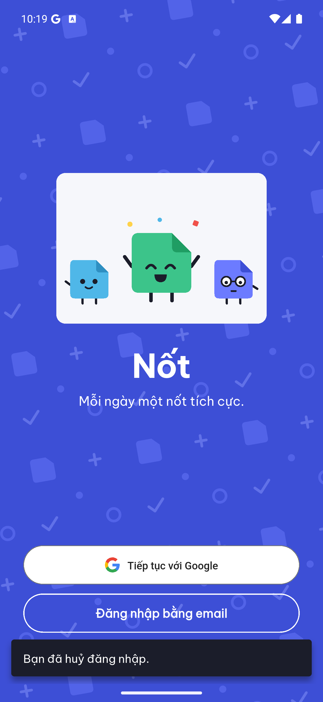
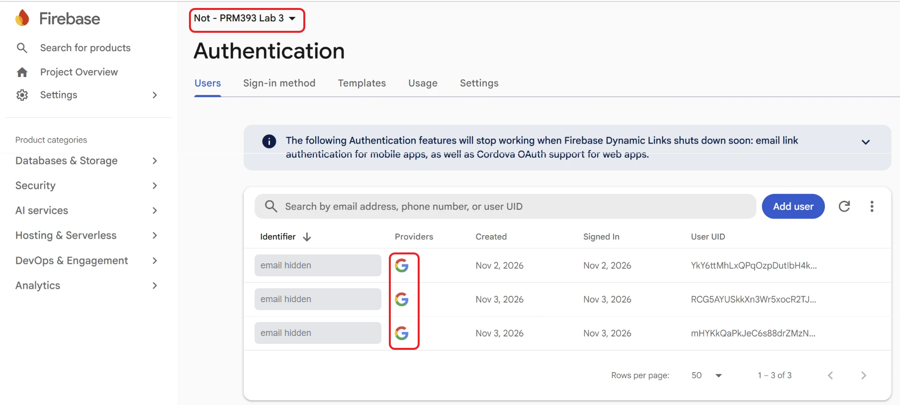
evidence/auth/console-users.png| Path | Content | Rule |
|---|---|---|
users/{uid} | Profile, role, optional photo | Owner reads; created only with role == 'user'; only an admin may change role; the owner may change only photo |
users/{uid}/notes/{id} | type, title, body, mood, createdAt; challenge result fields; groupId; optional image | Owner only; validNote checks keys, enums and lengths |
users/{uid}/groups/{id} | "First time" groups: name, idea, source, noteCount; optional image | Owner only; validGroup |
users/{uid}/private/habits, /settings | Habits to cut down, reminder times, lock | Owner only; fixed set of keys, list sizes capped |
users/{uid}/challengeProgress/{topic} | Level and completed cards per topic | Owner only |
users/{uid}/sharedStreaks/{id} | Shared streak image (base64 PNG, at most 850 000 characters) and its numbers | Owner only; created, never edited |
challenges/{id} | Catalogue, managed by staff or the seed script | Read for signed-in users; no client writes |
firebase/firestore.rules is deny-by-default: anything not matched is refused, and there is no if true. validNote accepts only known keys, a type and mood from fixed lists, a title of 1–120 characters, a journal of at most 2 000 characters and challenge values in range (anxiety 1–5, minutes 0–600). The rules are tested on the Emulator with @firebase/rules-unit-testing (npm run test:rules in firebase/): 18 cases, each with an allowed and a denied request. Photos are stored as a reference {url, publicId}, and validImage accepts exactly those two keys with a secure URL on res.cloudinary.com.
| ID | Case | ID | Case |
|---|---|---|---|
| R-01 | User cannot change own role | R-09 | Invalid notes are rejected |
| R-02 | Admin can change a role | R-10 | Month sticker only under its own id |
| R-03 | Own profile readable; unauthenticated denied | R-11 | Habits and settings private to the owner |
| R-04 | Unknown collection denied by default | R-12 | Catalogue read-only; progress private |
| R-05 | Profile created with role user | R-13 | Challenge result fields within range |
| R-06 | Cannot create a profile as admin or for someone else | R-14 | Group names and ideas are checked |
| R-07 | Write, read and delete own notes | R-15 | Own challenge cards, privately |
| R-08 | Cannot read or write someone else's notes | R-16 | Notes accept a Cloudinary image only |
| R-17 | Groups accept a Cloudinary image | R-18 | Owner sets or removes own photo, never the role |
validNote and validGroup still listed their allowed keys without image, and only an admin could update users/{uid}. Unit tests passed because they use fakes, but on the real project saving a note with a photo was denied. PR #47 added validImage and tests R-16 to R-18; after it was deployed, the same note saved and the 3-day milestone appeared (§2.1). The deployed rules are in the Console, not in test mode (evidence/deploy/firestore-rules.png).The weekly card on S11b is a one-page PDF built on the device with the pdf package, with Be Vietnam Pro embedded. FirebaseStorageService uploads it to reports/{uid}/weekly-<ISO week>.pdf, emits progress events that the screen shows as a percentage bar, and returns the download URL, shown with a copy button before the share sheet opens. firebase/storage.rules allows a user to read and write only their own folder, and only files with content type application/pdf under 5 MB. The weekly card was chosen because it is the one file the persona would want to keep or send; Storage was chosen over a Firestore field because PDFs are binary and can be larger than the 1 MB document limit.
report_exported has not appeared in DebugView. The same limit is why photos were moved to Cloudinary (§5.4).Photos can be attached in three places: a note (step 3 of F1), a "first time" group, and the profile picture in Settings. Because Firebase Storage needs the paid Blaze plan, they are uploaded to Cloudinary's free plan; only the weekly PDF stays on Firebase Storage. CloudinaryImageService (lib/firebase/cloudinary_image_service.dart) implements the ImageService interface, so ViewModels do not know which provider is used. It posts the image to the Cloudinary upload API with an unsigned upload preset: the app contains only the cloud name and the preset name, no API secret, and the format and size limits are set on the preset (the app also refuses files over 5 MB). Each upload gets a random public id under not/avatars, not/notes or not/groups, so it cannot be guessed or overwritten. The upload streams its progress, which the screen shows with a cancel button; the result is a reference {url, publicId} stored in Firestore and checked by the rules (§5.2). A successful upload logs image_uploaded with the folder and file size. Because an unsigned client cannot delete from Cloudinary, removing a photo only removes the reference.
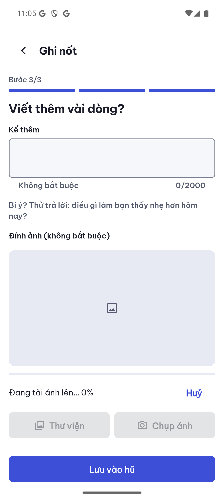
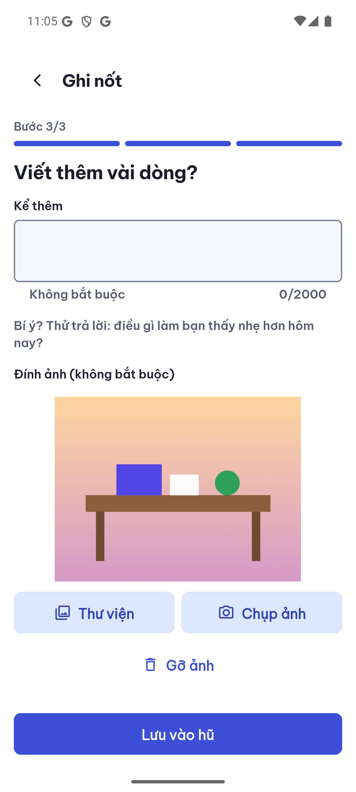
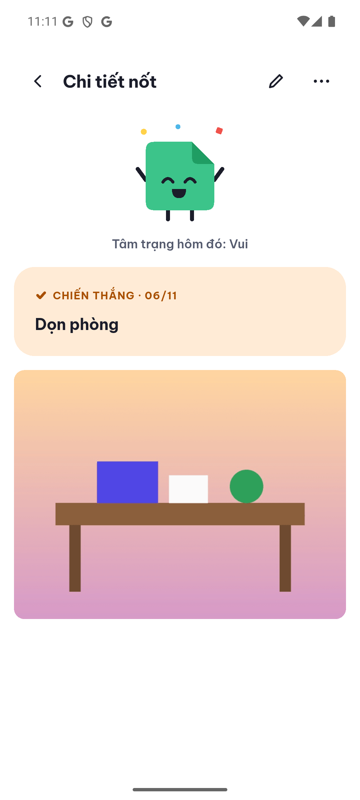
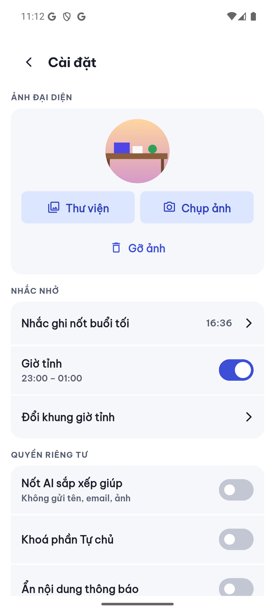
evidence/cloudinary/FirebaseMessagingService requests POST_NOTIFICATIONS on Android 13+ at the first moment a reminder matters, not at launch. If the user refuses, Settings explains why notifications help and offers "Mở cài đặt", which opens the system page. A message is received in all three app states. In the background and when the app is terminated, Android shows it in the system tray. In the foreground Android shows nothing, so the app displays it with flutter_local_notifications and passes the target route as the payload. Every message is saved to an inbox on the device with the state it arrived in; the inbox is in the Firebase demo area. A message may carry data route; routeFromData accepts only an allow-list of internal routes, and an unknown route opens Today. Test messages were sent from Console → Messaging → "Send test message" and through the FCM HTTP v1 API to the device token from the debug log; the token is not stored in the repository.
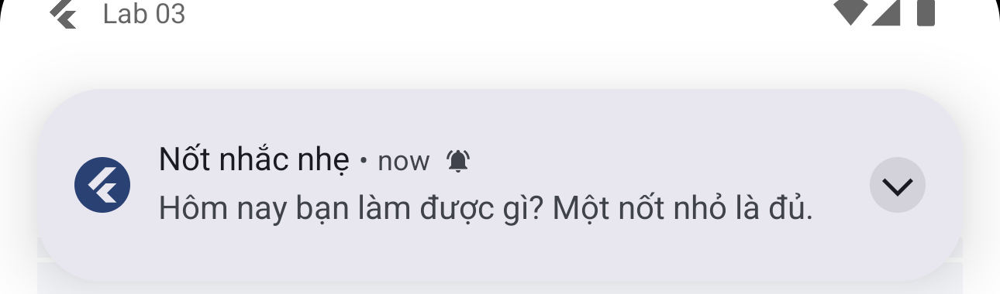
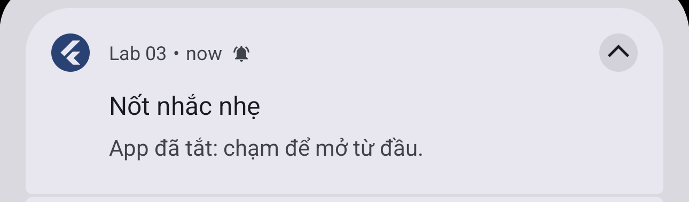
evidence/fcm/background.png)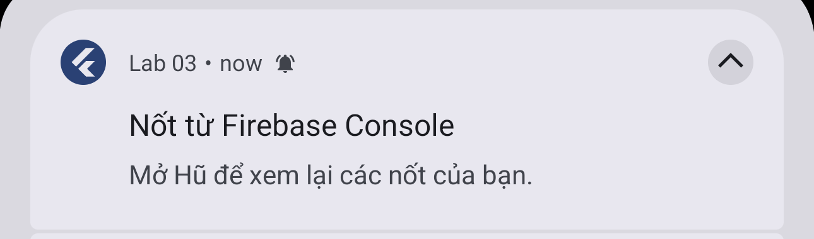
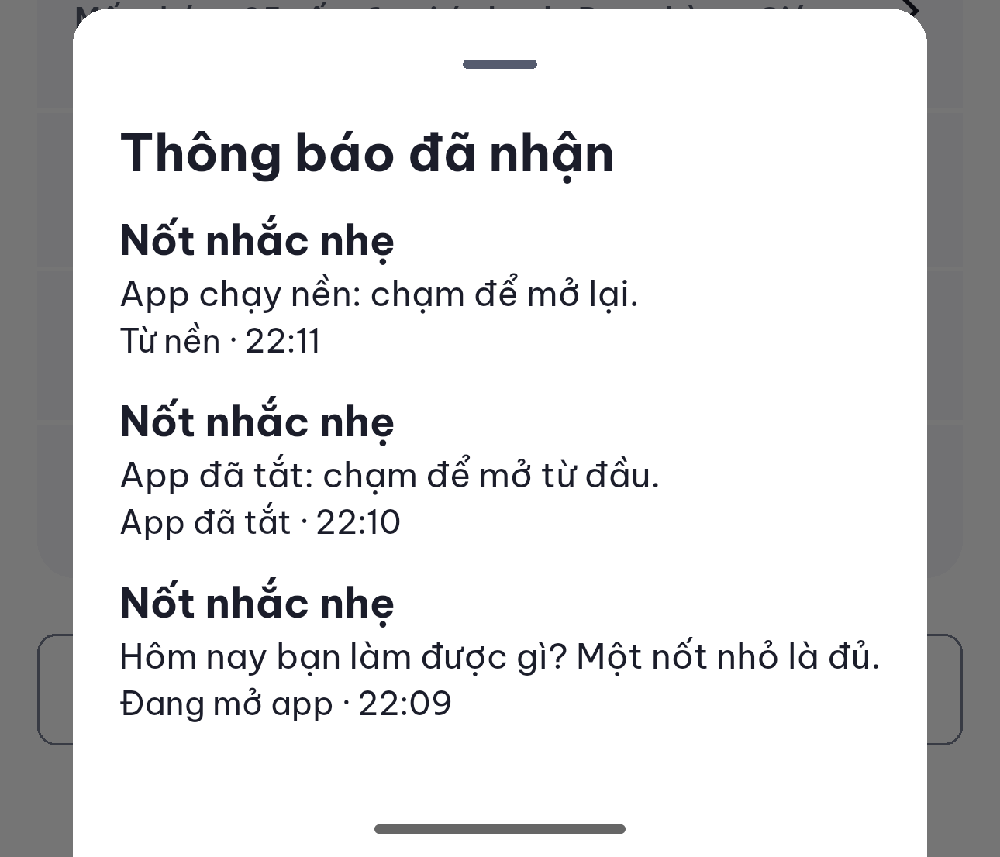
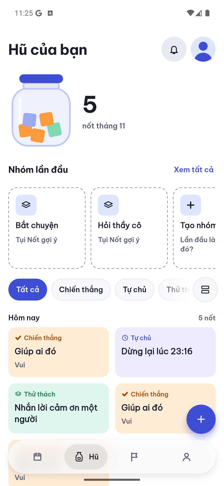
route=/jar opens the jarTwo reminders do not need a server and are scheduled locally instead (D-27): the evening note reminder (default 21:30, opens S03a) and the "Giờ tỉnh" (wake-up hour) nudge at the start of the late-night window (default 23:00, opens S09). Both are rescheduled when the time changes and cancelled on sign-out.
Remote Config is used for feature flags and content (§7.2). Analytics and Crashlytics are described with their evidence in §6 and §7.1. All three are wrapped so that a failure never reaches the user: Remote Config falls back to in-app defaults, Analytics calls go through SafeAnalytics.track, and Crashlytics is replaced by a no-op on the Emulator and on web, where it is not supported.
docs/analytics-plan.md is the plan. Each event answers a product question tied to a Lab 2 flow; events are sent by ViewModels through AnalyticsService, never by widgets. Naming follows the Analytics limits: snake_case, at most 40 characters, no reserved prefixes, booleans sent as 'true'/'false' strings. No parameter contains a note title or text, an email, a name or a group name. The user ID is set with setUserId after sign-in or when a session is restored at start-up, and cleared on sign-out. There are 12 custom events in the code (the minimum is 7) plus screen_view, sent by the router with the route pattern (for example /note/saved/:id, never an id).
| Event | Parameters | Sent by · question it answers |
|---|---|---|
login, logout | method | AuthViewModel · which sign-in method do users choose? |
note_saved | mood, note_type, has_journal, duration_ms | NoteComposerViewModel · what share of notes is saved in under 30 000 ms (the success criterion)? |
note_viewed | note_type | NoteDetailViewModel · do users come back to old notes? |
challenge_opened | challenge_id, note_type | ChallengeDetailViewModel · which cards are opened often but rarely finished? |
challenge_completed | challenge_id, minutes | |
self_control_logged | has_habit | SelfControlViewModel · do users track a specific habit or log in general? |
group_viewed | group_source, group_idea, note_count | GroupDetailViewModel · which "first time" groups are reopened? |
report_exported | format | WeeklyReportViewModel · does anyone export the weekly card? |
streak_extended | streak_length, streak_milestone | NoteSavedViewModel · do users keep their streak, and which milestone keeps them? |
streak_shared | streak_length, streak_milestone, method | StreakShareViewModel · do users share their streak? |
image_uploaded | image_folder, file_size_kb | ImageUploadViewModel · where do users add photos? (not yet in analytics-plan.md) |
How it was verified. Analytics has no emulator, so the app ran against the real project with debug mode enabled on the emulator (adb shell setprop debug.firebase.analytics.app com.quanphungg.lab03), which makes events appear in DebugView within seconds. One account signed in with Google, saved a note, logged self-control, opened a challenge and a group, and signed out. The same run was captured three ways: DebugView in the Console (figure), adb logcat (evidence/analytics/logcat-events.txt, for example note_saved {duration_ms=7990, mood=vui, note_type=chien_thang, has_journal=false}), and unit tests that assert the exact name and parameters of each event. Of the first nine events, every one was observed except report_exported, which is only sent after a successful upload (§5.3). The three newer events (streak_extended, streak_shared, image_uploaded) were added after this DebugView run and have not been captured there yet.
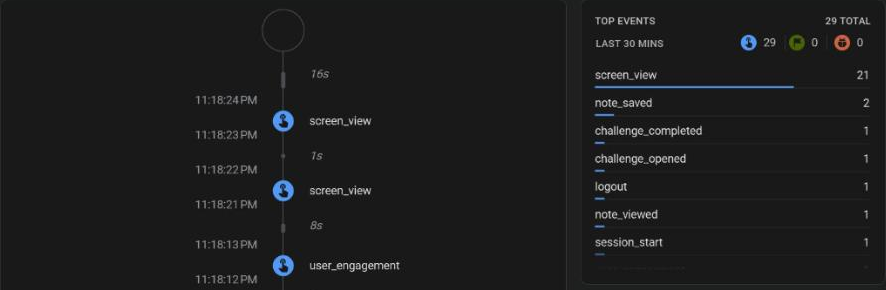
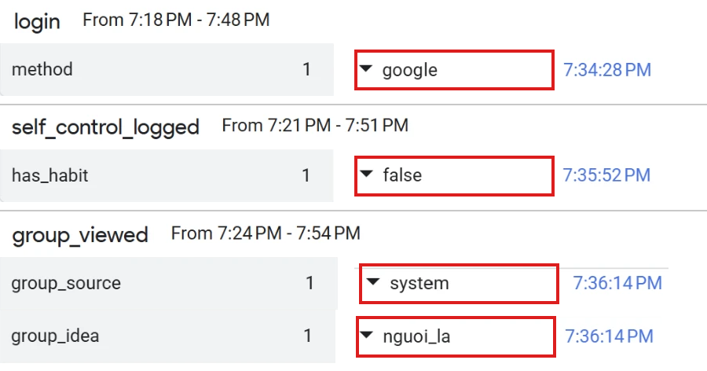
evidence/analytics/debugview-*.webpThe parameters confirm the privacy rule: group_viewed for the system group "Bắt chuyện" (start a conversation) sends group_source=system, group_idea=nguoi_la and note_count=0, but not the group's name, which users can edit. User properties listed in the plan (§5 of the plan) are not implemented yet.
Crash handlers for Flutter and platform errors are installed in main.dart before runApp, except on the Emulator and on web. Handled errors are recorded as non-fatals at six places where the user's action really fails, each with a reason: ensureProfile (sign-in), note_save, note_update, note_delete, challenge_progress and report_export. The router sets the custom key screen to the current route, and the Crashlytics user ID is set after sign-in. A "test crash" button exists in the Firebase demo area of debug builds only.
The non-fatal in the figure comes from a real path, not a staged one: exporting the weekly card on the real project fails because there is no Storage bucket, the user sees the message, and WeeklyReportViewModel records it. The issue arrives grouped as FirebaseStorageService.uploadReport with screen=/journey and the user ID. The dashboard also showed a real fatal that nobody had noticed: a Hero error caused by a null heroTag on the add-note button, which was then fixed.
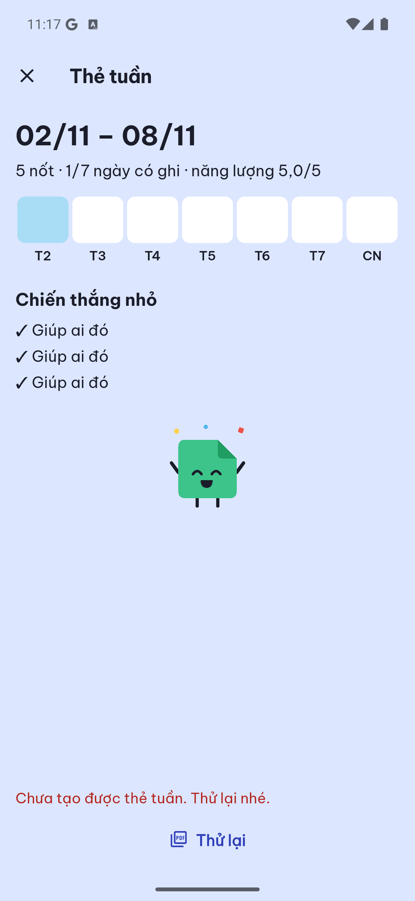
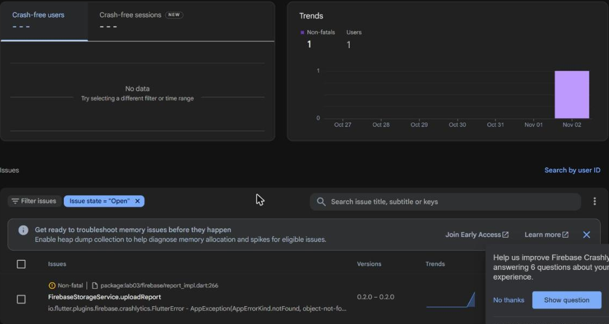
uploadReport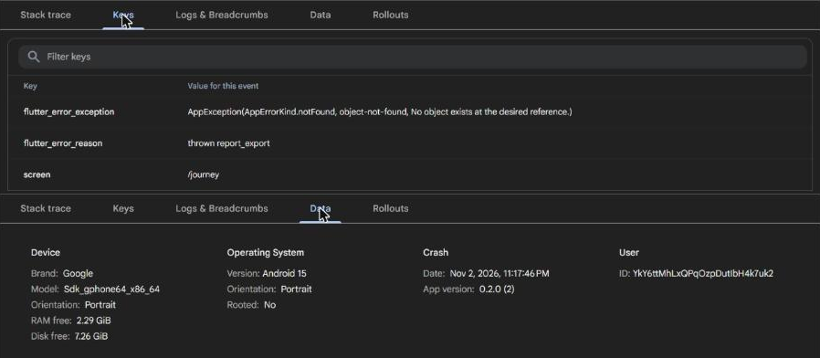
screen=/journey, user ID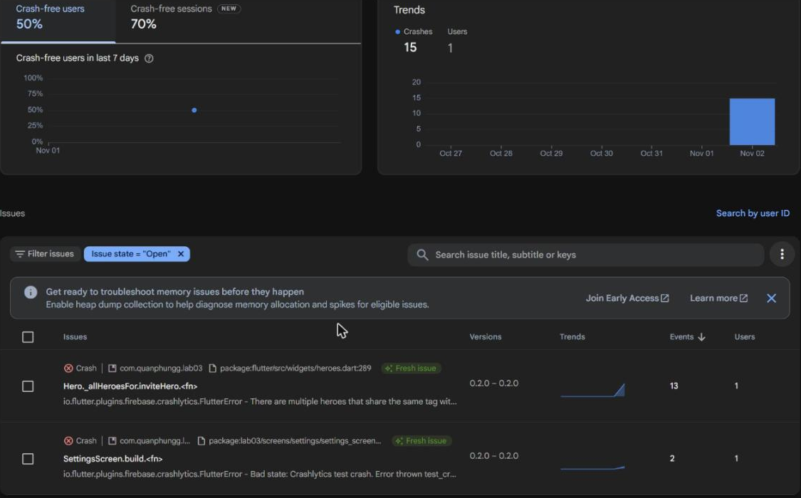
evidence/crashlytics/Remote Config holds four feature flags (the three below and discord_enabled) and four content values (quick-win chips, Discord invite link, channel map and greetings). The flags shown here change visible behaviour: groups_enabled shows or hides the "first time groups" shelf on the jar, custom_challenges_enabled the add-your-own-card button, firebase_demo_enabled the Firebase demo area in Settings.
setDefaults is called before any fetch with the same values as firebase/remote-config-defaults.json; every flag defaults to on, so a failed fetch never removes a feature.fetchAndActivate at launch with a 10-second timeout. The minimum fetch interval is zero in debug builds, so a Console change shows on the next launch for the demo, and one hour in release; activated values stay cached on the device until the next successful fetch. Errors are caught and the defaults stay.firebase/remoteconfig.template.json with firebase deploy --only remoteconfig or edited in the Console. The before and after screenshots come from the same installed APK; only the Console value changed.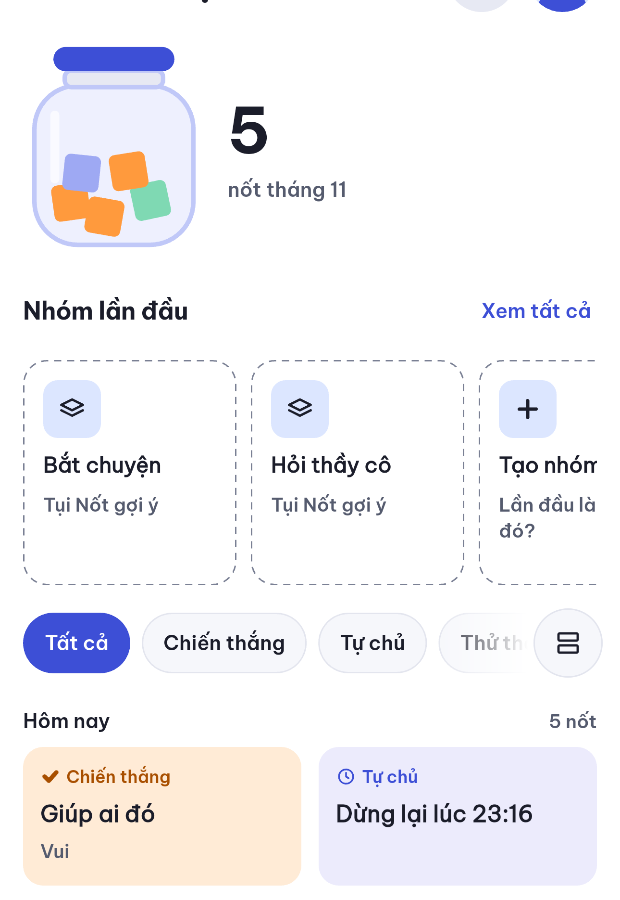
groups_enabled=true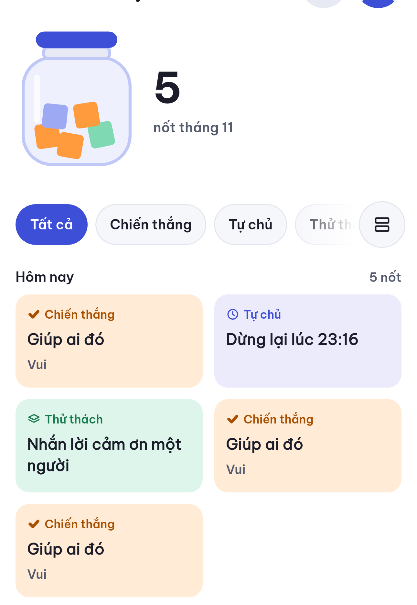
false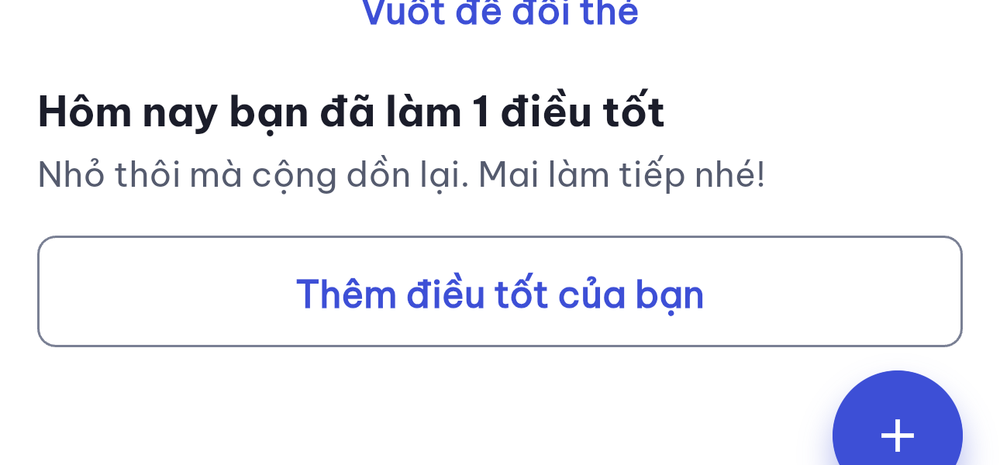
custom_challenges_enabled=true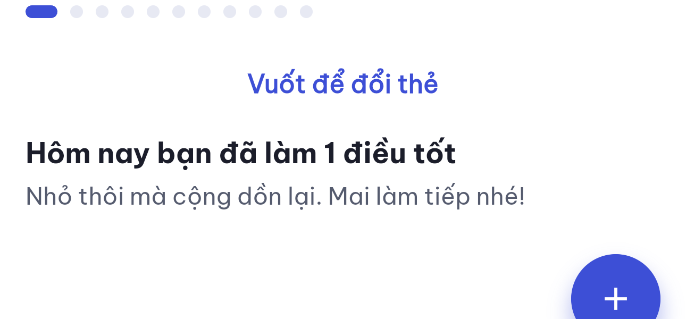
false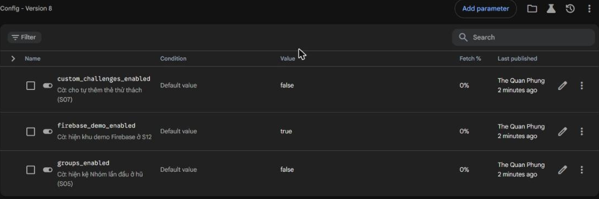
evidence/remote-config/One known weakness, reported by the code review and not fixed: the Challenges tab and the group shelf keep their state, so a flag changed by a manual refresh is only visible after the screen is rebuilt (finding 38-ec03d165).
Tool and setup. ARTEMIS (google/artemis, pinned at commit 351ca84, vendored in tools/artemis/) is an AI agent that operates an Android device through ADB from a goal written in natural language. It ran on an Android 15 emulator with the debug build signed in with a test account. Every agent node used deepseek/deepseek-v4.1-flash through OpenRouter with the Flash profile; the only config changes from upstream are the model routing and turning off a summariser that supports only Google models. The test suite is a pytest project in e2e_test/; plan, environment and results are in docs/test-plan.md.
How a case asserts. A goal ends by asking the agent to answer with one fixed keyword, and the test asserts on that reported value, not only on the agent saying it succeeded. The answer is read from the last report_task_status step of the session, because the server does not fill TaskResult.output. Each case runs three times (--runs 3):
async def test_t04_f1_empty_note_cannot_be_saved(ask) -> None:
answer, result = await ask(
"Ở màn Hôm nay, bấm 'Ghi nốt', ... KHÔNG gõ gì vào ô nội dung. Nhìn nút lưu: "
"trả lời DISABLED nếu nút bị mờ hoặc bấm vào không đi tiếp, ENABLED nếu ...",
"DISABLED hoặc ENABLED",
)
assert "DISABLED" in answer, f"{answer!r} (trace {result.trace_id})"
| ID | Flow | Agent must report | Pass | Time / run |
|---|---|---|---|---|
| T01 | Launch | WELCOME or TODAY | 3/3 | 20–52 s |
| T02 | F1 main path: save a note | SAVED | 3/3 | 31–206 s |
| T03 | Jar: open and delete the test note | DELETED | 3/3 | 256–391 s |
| T04 | F1 error: empty note | DISABLED | 3/3 | 55–56 s |
| T05 | F1 error: Back with a draft | DIALOG | 3/3 * | 108–214 s |
| T06 | F1 error: airplane mode via adb | OFFLINE_BANNER | 2/3 | 264–421 s |
| T07 | F2 self-control screen | SELF_CONTROL | 3/3 | 38–52 s |
| T08 | F2 breathing | BREATHING | 3/3 | 20–28 s |
| T09 | F3 open a challenge, go back | DETAIL_THEN_BACK | 3/3 | 46–82 s |
| T10 | Four tabs | ALL_TABS | 3/3 | 33–40 s |
| T11 | Settings: Remote Config row | contains "Cờ tính năng" | 3/3 | 13–19 s |
| T12 | Native: Home, notification shade, relaunch | LOGGED_IN | 3/3 * | 32–39 s |
Results: 35 of 36 runs pass (97 %). Error paths are covered by T04, T05 and T06; T06 and T12 act outside the app (airplane mode through adb; the Home button and the notification shade, with the agent not locked to the app package). The first full run took 62 minutes and passed 31 of 36. We analysed each failure before changing anything:
DIALOG. The check became "contains DIALOG and not NO_DIALOG".LOGGED_IN. Both changes were made after seeing the results; they make the test match the intended behaviour and do not hide an app bug. T05 and T12 were re-run: 6 of 6.JUnit reports: evidence/artemis/junit-full-run.xml, junit-rerun-t05-t12.xml; device screenshots and the Workspace page: evidence/artemis/.
e2e_test/test_main_flows.py but have no results, so they are not in the table above and the requirement they cover is not yet met:
adb logcat: it must find note_saved with mood and note_type, and must not find the note text.E2E_STORAGE_READY=1, otherwise the error message with "Thử lại".Observations. Gboard's handwriting toolbar intercepted taps on the text field until it was turned off (stylus_handwriting_enabled), which made T02 time out early on. Restarting the ARTEMIS server during a run left orphan agent processes that held the emulator. scrcpy was not installed, so traces have periodic screenshots instead of video.
Every pull request into main is reviewed automatically by CodeRabbit. Its comments on PRs #28, #29 and #38 were exported with tools/export_coderabbit.py into docs/code-review.md, one row per finding with the file and lines, severity, category, the tool's suggestion and our verdict with a reason. We checked every finding against the code before deciding.
| Severity | Count |
|---|---|
| Major | 3 |
| Minor | 45 |
| Trivial | 4 |
| Category | |
| Functional correctness | 33 |
| Stability and availability | 10 |
| Maintainability | 4 |
| Security and privacy | 3 |
| Data integrity | 2 |
| Verdict | Count | Meaning |
|---|---|---|
| Right, fixed | 3 | Real bug; the fix commit is named |
| Right, not fixed | 37 | Real bug, left with a reason; mostly small or rare |
| Not needed | 11 | Technically right but not worth it here (helper scripts, iOS) |
| Wrong | 1 | The tool misread the code |
| Finding | What CodeRabbit reported | Our decision and reason |
|---|---|---|
| 38-bfeb007a Major · privacy | The FCM inbox is stored on the device and survives sign-out, so the next account on the phone can read the previous user's notifications. | Accepted, fixed in 736453a. signOut now clears fcm_inbox; tests in auth_view_model_test.dart and firebase_messaging_service_test.dart. |
| 38-75b5e00c Minor | Foreground notifications have no payload, so tapping one opens nothing. | Accepted, fixed in 5e13651. The route is passed as the payload and the tap listener navigates to it; tests added. This was a missing FCM requirement. |
| 38-322a383f Minor | The Analytics user ID is not set when a session is restored at start-up. | Accepted, fixed in 211a4d5. The router sets it whenever the auth user changes. |
| 38-cfffb9a5 Major | Pass Darwin settings to initialize in start(). | Rejected, not needed. Correct for iOS, but the app ships on Android and web only and firebase_options.dart has no iOS app. Major is too strong here. |
| Saving flag Minor | _saving is set but never read, so a double tap could add the same card twice. | Rejected, wrong. canSubmit is !_saving && title not empty, and the button is disabled while saving. The only wrong finding of 52. |
| 38-f0574c79 Minor | logScreen is called directly, so an Analytics error there is not caught. | Right, not fixed yet. Valid; unlike track it bypasses the safe wrapper. Low impact, scheduled with 38-3b4a994a. |
| 38-3c797d6d Minor | Missing context.mounted check after the Remote Config refresh in Settings. | Right, not fixed yet. The method above it has the check; this one does not. |
What we learned about the tool: it is precise about the lines it reads (51 of 52 findings were technically right) and it found two bugs that broke requirements, but its severity labels are not reliable, and it missed a bigger issue in a script it reviewed (a hard-coded path from one developer's machine in evidence/artemis/capture_loop.sh). Most of the real findings were read only after the pull request had been merged; only one of the 40 real bugs was fixed before merge.
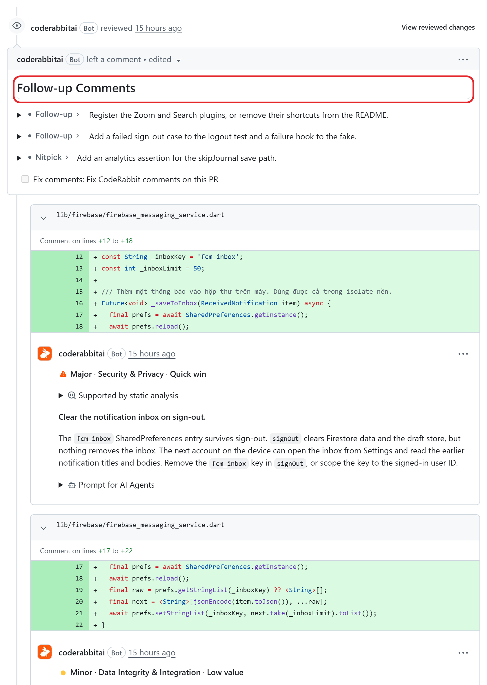
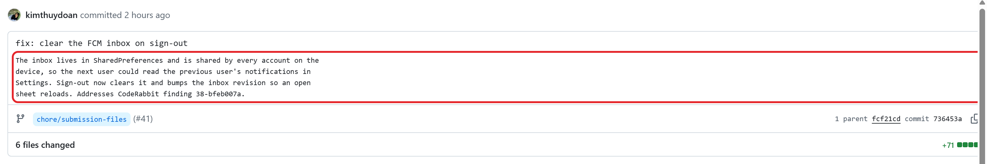
Analytics and Crashlytics have no emulator. Stages 3 and 4 were built against the Firebase Emulator Suite, which made rules and data easy to test. Stage 5 could not be checked that way: Analytics and Crashlytics only work against a real project. We kept a console logger and a no-op reporter for the Emulator and web, and verified Stage 5 on the real project with DebugView and the Crashlytics dashboard.
Cloud Storage needs the Blaze plan. The project is on the free Spark plan, which can no longer create a bucket. Rather than fake a successful upload, we kept the real failure: the user sees a message with a retry, and the error is the non-fatal shown in §7.1. The complete upload was tested only on the Emulator. For photos the team switched to Cloudinary's free plan, which needed no billing and no server.
New fields against old rules. Adding photos changed the shape of notes, groups and profiles, but the rules still described the old shape. All 250 tests passed, because they replace Firestore with fakes; the problem only showed on the device, as a refused save. It also exposed a misleading message: the app reported the permission error as "phiên đăng nhập đã hết" (session expired). The rules were fixed and tested (PR #47); the message is not fixed yet.
Google Sign-In on a new machine. On a second development machine Google Sign-In failed with "Không đăng nhập được". There were three causes: no Google account on the emulator, the machine's debug SHA-1 was not registered, and the committed google-services.json had no OAuth client. Adding the fingerprint in the Console and committing the regenerated file fixed it.
An AI agent as the tester. The agent's answers vary from run to run, it sometimes tapped controls the goal told it not to touch, and the keyboard and leftover processes interfered. Fixed keywords in the answers made the results checkable, and analysing each failure showed that most of them were in our tests, not in the app.
Lab 2 documents that disagree. Two Lab 2 documents gave different limits (D-11), and some Lab 2 labels confused users (D-28). Each case needed a decision and a log entry instead of a silent change.
Evidence from protected screens. The self-control screen sets FLAG_SECURE so the user's habits never appear in screenshots; the same flag makes our own screenshots black. Those steps were checked with uiautomator dump instead.
| Tool | Used for | How the output was checked |
|---|---|---|
| Claude Code (Anthropic) | Writing and refactoring Flutter code and tests; writing docs; building the slides (React + reveal.js) and this report; capturing evidence over adb | Changes went through flutter analyze, flutter test and a pull request; facts in the docs were checked against the code, the Console and the evidence files |
| CodeRabbit | Automatic review of every pull request | Each of the 52 findings was verified by hand and given a verdict in docs/code-review.md |
| ARTEMIS (Google) with DeepSeek v4.1 Flash via OpenRouter | AI agent that drives the app for the end-to-end tests | Assertions on the reported value; every failure analysed, and changed assertions disclosed |
The agent sees screenshots of the app, so tests use a test account and a note text reserved for tests ("E2E test note"). No service-account keys, API keys or keystores are committed; tools/artemis/.env is git-ignored. The Android google-services.json is committed, as the handout allows, because access is controlled by the Security Rules.